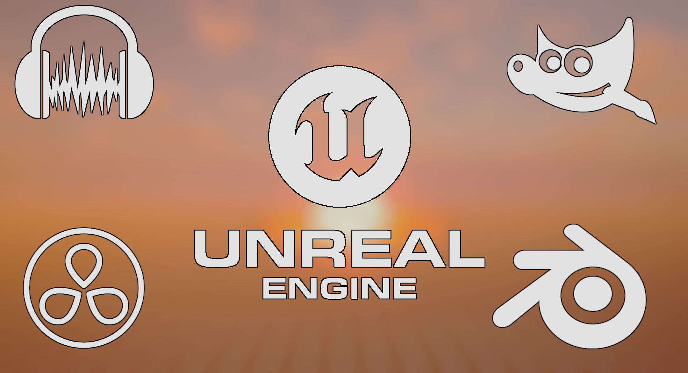

The Last Pioneers is a narrative driven singleplayer FPS set in an alternate timeline. The game will have tactical elements, along with survival mechanics.

It takes place in the year 2035, only a few months after rouge Soviet AI took control of nuclear weapons, destroyed Earth, and killed 90% of the human race. Humanity is now forced to live amongst the stars. You play as a Starsoldier in the United States Space Force, with the ultimate goal of providing security to interplanetary American habitats. Being a soldier, you are given combat objectives that allow you to explore various parts of the solar system.

Every combat mission has its very own map, or landing zones around the solar system. As of right now, I plan to include Earth, The Moon, Mars, Europa, Titan, and maybe Venus as environments to house different maps. Each one of these planets/moons will have 2-3 combat objectives on it, some of them will be on the ground, a few will be in orbit around that planet/moon.

I use Unreal Engine 5.5 and Blueprint programming to create the game (No C++ for now). I use Blender for 3D models and animations, Audacity for sound design, GIMP for graphic design, and Davinci Resolve 19 for video editing.

NOTHING IS FINAL.